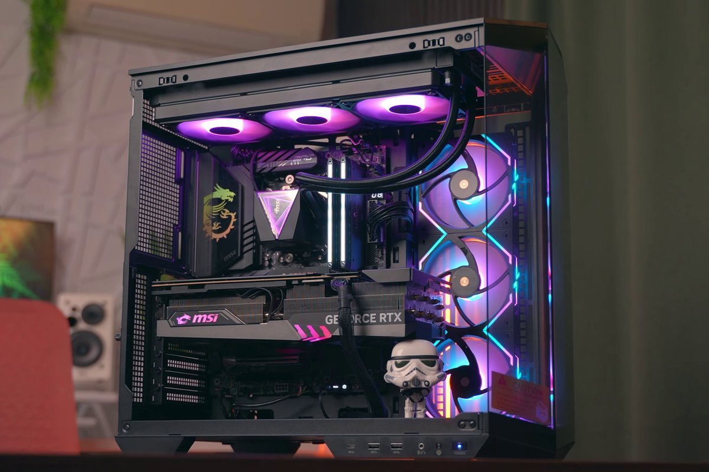

Лавандовый фон
Мягкое пространство для текста и иллюстраций.
#EEE8FAДанила / Мой фаворит
У моего блога есть любимый цвет. Он объединяет совсем разные увлечения в одно личное пространство.
МОЙ ЦВЕТ

#7545DB
Фаворит / любимый цвет
Мой любимый цвет — фиолетовый. Поэтому для этой страницы я выбрал именно его. Он есть в заголовках иллюстраций, кнопках и небольших деталях блога.
Скалодром, игры, пайка и компьютеры — разные увлечения. Общий цвет помогает собрать их в единый мир, который похож на меня.
Не обязательно выбирать один любимый предмет или одну игру. Иногда достаточно цвета, к которому хочется возвращаться.
Моя палитра
Три оттенка,
один характер.
Мягкое пространство для текста и иллюстраций.
#EEE8FAОттенок для монограммы и деталей оформления.
#CBB2EFОсновной цвет кнопок и активных элементов.
#7545DBПо ту сторону оформления